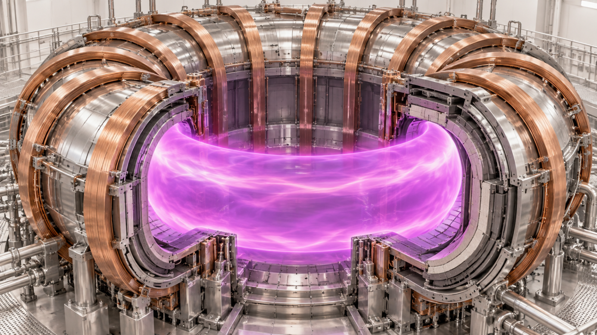
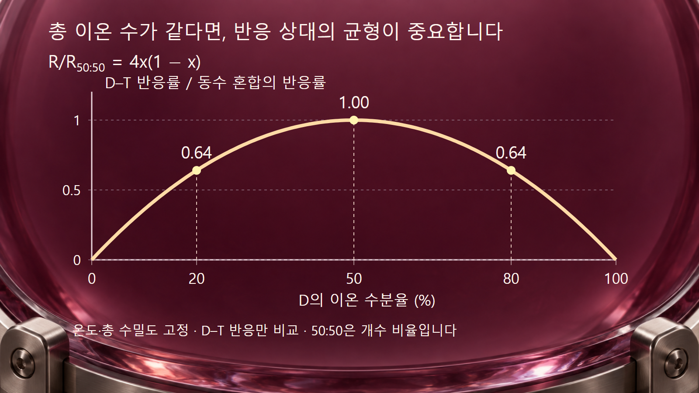
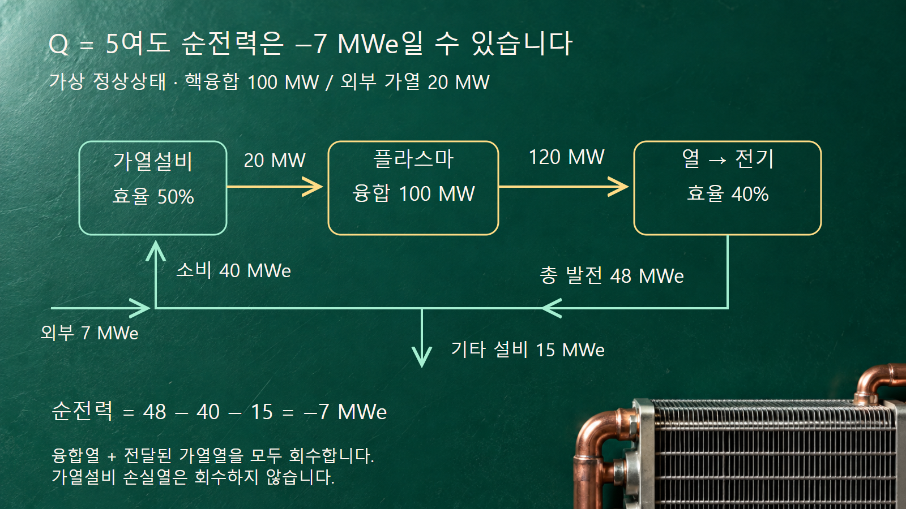

질량·에너지와 핵반응 · 038
핵융합
D–T 반응의 에너지 운반자에서 혼합비와 순전력까지 연결합니다

핵융합에서는 가벼운 원자핵들이 반응하여 더 무거운 핵을 만들며 에너지를 내놓을 수 있습니다. 그러나 한 번의 반응에서 에너지가 나온다는 사실과 발전소가 전기를 순생산한다는 사실은 다릅니다. 반응 횟수, 에너지를 운반하는 입자, 가열과 열손실, 발전설비의 소비전력을 차례로 연결해야 그 차이가 보입니다.
1. 핵융합은 화학적 결합과 다릅니다
연소와 같은 화학반응은 주로 원자의 전자 배치를 바꿉니다. 핵융합은 원자핵 자체를 바꾸므로 생성물의 핵종과 정지질량 차이로 에너지 수지를 계산합니다. 반응 전후의 전하와 핵자 수가 보존되어야 하며, 에너지가 방출되는지는 반응 Q값으로 판단합니다. 가벼운 핵의 융합이 대체로 에너지를 내놓는다는 경향을 모든 핵종 조합의 보편적인 법칙으로 적용하지 않습니다.
발전 연구에서 중요한 반응은 중수소 D와 삼중수소 T의 결합입니다. 두 핵종은 모두 양성자가 하나인 수소 동위원소이며 중성자 수는 각각 하나와 둘입니다. 태양 중심의 주요 수소 연소 경로인 양성자–양성자 연쇄와 실험실의 D–T 반응은 같은 반응식이 아닙니다. 별의 중력에 의한 구속을 지상의 장치가 그대로 이용하는 것도 아닙니다.
2. 약 17.6 MeV는 두 생성물에 나뉩니다
주요 반응식은 21H + 31H → 42He + 10n이며, Q값은 약 17.6 MeV입니다. 생성된 헬륨 원자핵을 알파입자라고 부릅니다. 핵자 수는 2 + 3 = 4 + 1, 전하는 1 + 1 = 2 + 0으로 맞습니다. 여기서 원자핵을 다루므로 중성 원자의 전자 껍질을 반응 모형에 그려 넣지 않습니다.
입사 운동에너지가 Q값에 비해 작다고 보고 질량중심계에서 계산하면 두 생성물의 운동량 크기는 같습니다. 비상대론적 근사 E = p²/(2m)에서 가벼운 중성자가 더 많은 운동에너지를 받습니다. mα ≈ 4mn으로 두면 En/Eα ≈ 4이며, 17.6 × 4/5 = 14.08 MeV와 17.6 × 1/5 = 3.52 MeV입니다. 흔히 약 14.1 MeV와 3.5 MeV로 표시합니다. 실제 질량·상대론·입사에너지와 관측계에 따른 정밀 보정은 이 간단한 분배 계산에 포함하지 않습니다.
하전된 알파입자는 자기장 구속 플라스마에 에너지를 돌려줄 수 있어 자기 가열에 중요합니다. 전하가 없는 중성자는 같은 방식으로 자기장에 가두지 못하며 주변 물질과 상호작용해 에너지를 전달합니다. 따라서 알파입자의 플라스마 가열과 중성자의 벽·블랭킷 가열은 역할과 위치가 다릅니다. 반응 에너지 전부가 플라스마에 남는다는 해석은 잘못입니다.
3. 예시 1 — 연료를 더 치우치게 섞으면 반응은 늘어납니까?
균일한 D–T 플라스마에서 단위 부피·단위 시간의 반응수는 R = nDnT⟨σv⟩로 씁니다. nD와 nT는 각 이온의 수밀도이며, ⟨σv⟩는 상대속도 분포에 대해 단면적과 상대속도의 곱을 평균한 반응률 계수입니다. 서로 다른 D와 T를 짝짓기 때문에 동일 입자 쌍의 중복을 없애는 1/2 계수는 붙이지 않습니다.
총 연료 이온 수밀도 n = nD + nT와 온도·속도 분포를 고정합니다. D의 수분율을 x로 두면 nD = xn, nT = (1 − x)n이므로 R = n²x(1 − x)⟨σv⟩입니다. x(1 − x)는 x = 0.5에서 가장 큽니다. D:T = 50:50의 기준 반응률을 1로 두면 20:80에서는 4 × 0.2 × 0.8 = 0.64, 즉 64%입니다. 연료 총수가 같아도 반응 상대가 부족하면 유효한 짝의 수가 줄어듭니다.
이 비율은 이온 개수 비율입니다. D와 T의 질량이 약 2:3이므로 같은 이온 수의 혼합물은 질량비로 약 40:60입니다. 질량을 반반 섞는 경우와 다릅니다. 또한 이 계산은 D–T 반응 성분만 비교하며, D–D 같은 부반응이나 연소에 따른 조성 변화는 포함하지 않습니다. 순수 D 또는 순수 T에서 곡선이 0이 된다는 것은 D–T 반응 상대가 없다는 뜻입니다.

4. 반응률과 열손실을 함께 맞춰야 합니다
위 예시에서 n의 단위가 m−3, ⟨σv⟩의 단위가 m³·s−1이면 R은 m−3·s−1입니다. 반응당 에너지를 J로 환산해 곱하면 핵융합 출력밀도 W·m−3를 얻습니다. 같은 온도와 조성을 유지하며 n을 두 배로 바꾸는 수학적 비교에서는 R이 네 배가 됩니다. 실제 장치에서 밀도를 올리는 과정은 구속·불순물·안정성과 연결되므로 이 비례식만으로 달성 가능한 출력을 예측하지 않습니다.
고온은 반응률을 높이는 데 필요하지만 온도만 높다고 에너지 수지가 맞지는 않습니다. 밀도와 에너지 구속도 중요합니다. 자기장 구속에서는 자기장을 이용해 하전입자의 운동을 제한하고, 관성 구속에서는 짧은 시간의 고밀도 상태를 이용합니다. 두 방식의 성능 수치를 비교할 때 밀도·온도와 함께 시간의 정의도 확인합니다.
에너지 구속시간은 저장된 플라스마 에너지가 지정한 손실 경로로 빠져나가는 속도를 나타내는 시간척도입니다. 방전 전체가 지속된 시간이나 개별 입자의 체류시간과 같지 않습니다. 문헌에 따라 복사손실을 별도로 분리하므로 정의도 함께 읽어야 합니다. 오랫동안 방전을 유지했다는 기록만으로 에너지 손실이 작거나 순발전이 가능하다고 판정할 수 없습니다.
5. Q의 분자와 분모를 먼저 읽습니다
이 글에서 플라스마 이득은 Qplasma = Pfusion/Pheat로 정의합니다. 분자는 핵융합 출력, 분모는 플라스마에 공급하는 외부 가열 출력입니다. 이 Q는 앞서 반응 한 건의 질량차 에너지에 사용한 Q값과 다른 기호 관례이며 단위가 없습니다. Qplasma = 1은 이 두 출력이 같다는 뜻이지, 발전소가 전기적으로 손익분기점에 도달했다는 뜻은 아닙니다.
| 비교 대상 | 경계 안팎의 양 | 별도로 남는 질문 |
|---|---|---|
| 반응 Q값 | 반응 전후 정지질량 차이, MeV | 초당 몇 번 반응합니까? |
| 플라스마 이득 | 핵융합 출력 / 외부 가열 출력 | 가열 전력변환 손실은 얼마입니까? |
| 발전소 순전력 | 총 발전전력 − 설비 소비전력 | 냉각·자석·연료계통 소비를 포함합니까? |
ITER의 설계 목표는 외부 가열 50 MW에 대해 핵융합 출력 500 MW, 즉 Q = 10입니다. [3] 이는 목표값이며 이 글에서 달성 실적으로 제시하지 않습니다. ITER는 발생한 열로 전기를 생산하는 발전소가 아니라 실험장치입니다. 다른 장치가 발표하는 연료 이득·표적 이득·설비 이득도 분모와 경계가 다를 수 있으므로 이름만으로 같은 지표로 취급하지 않습니다.
6. 예시 2 — Q = 5여도 순전력이 음수일 수 있습니다
특정 장치의 예측이 아닌 가상의 정상상태 수지로, 핵융합 출력 100 MW와 외부 가열 출력 20 MW를 가정합니다. 플라스마 이득은 100/20 = 5입니다. 가열설비의 전기에서 플라스마 가열로의 효율을 50%로 두면 필요한 전력은 20/0.5 = 40 MWe입니다. 가열 출력 20 MW와 그 장치가 소비하는 전력 40 MWe를 혼동하지 않습니다.
단순화를 위해 핵융합 에너지와 플라스마에 전달된 외부 가열 에너지를 모두 회수하여 열출력 120 MW를 얻는다고 가정합니다. 블랭킷의 추가 핵반응에 따른 에너지 증배는 없고, 가열설비에서 발생한 나머지 20 MW의 손실열은 회수하지 않습니다. 열에서 전기로의 변환효율이 40%이면 총 발전전력은 120 × 0.4 = 48 MWe입니다. 다른 보조설비가 15 MWe를 소비하면 순전력은 48 − 40 − 15 = −7 MWe입니다.
음수는 설정한 경계에서 외부 전력 7 MWe가 더 필요하다는 뜻입니다. 이 계산은 융합 가능성을 부정하거나 실제 발전소 효율을 예측하는 자료가 아니라 서로 다른 이득의 분모를 구별하는 예시입니다. 특히 회수 가능한 외부 가열 20 MW를 열수지에 넣으면서 그 가열설비의 전력 소비를 빼야 합니다. 한쪽만 포함하면 에너지 경계가 맞지 않습니다.

7. 반응의 성공 뒤에도 재료와 연료 순환이 남습니다
D–T 반응의 중성자는 열을 운반하지만 구조재에 손상과 방사화를 일으킬 수 있습니다. 삼중수소 자체도 방사성 동위원소이므로 저장·회수·누설 관리가 필요합니다. 핵융합을 방사선이나 방사성 물질이 전혀 없는 과정이라고 설명하지 않습니다. 반응을 유지하는 조건과 시설의 방사선 방호·폐기물 관리는 서로 다른 문제입니다.
리튬을 포함한 증식 블랭킷은 중성자를 이용하여 삼중수소를 만들어 연료로 회수하는 개념입니다. 그러나 핵반응으로 생성된 양 전부가 바로 사용 가능한 연료가 되는 것은 아닙니다. 추출·처리 과정의 재고와 손실, 소비량과 공급 시점을 함께 맞춰야 합니다. ITER의 시험 블랭킷 프로그램도 이 기술을 검증하려는 연구이며, 대규모 연료 자급을 이미 실증한 것으로 표현하지 않습니다. [5]
핵융합 성과를 읽을 때에는 먼저 어떤 반응과 어떤 이득을 측정했는지 확인합니다. 그다음 그 조건을 얼마나 유지했는지, 열을 전기로 바꾸는 과정과 설비 소비가 포함되었는지 살펴봅니다. 반응 물리의 진전과 가동률·재료 수명·연료 순환의 진전이 함께 축적되어야 발전 기술의 완성도를 평가할 수 있습니다.